Exploration
Lieux & chemins
Les lieux à découvrir
Le monde est découpé en cases de 320 blocs ; la plupart en portent un, choisi selon le biome. Chacun a ses coffres, et la plupart peuvent cacher une page de la Chronique.

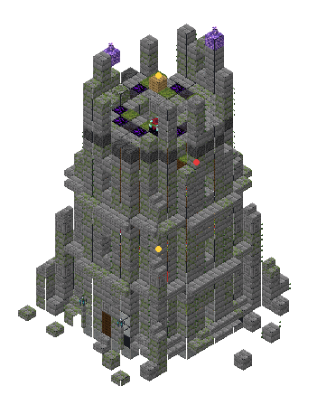
Tour du mage
forêts, Sylveescalier en colimaçon, bibliothèque, laboratoire gardé, couronne effondrée

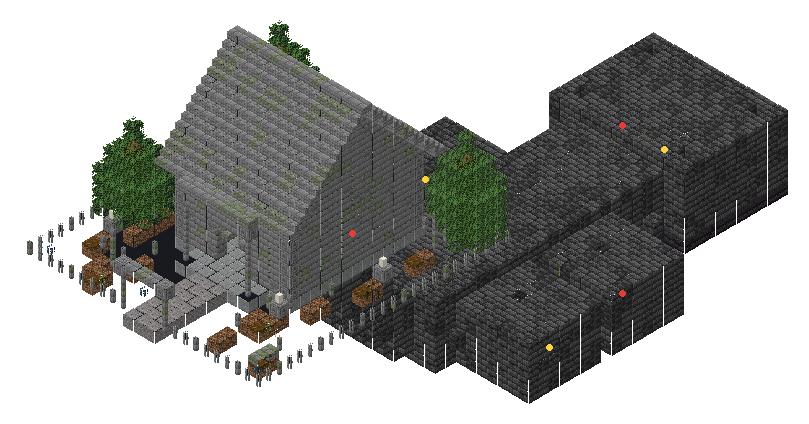
Crypte des Anciens
plaines, forêts, taïgascimetière, mausolée, catacombes, caveaux, tombeau du seigneur

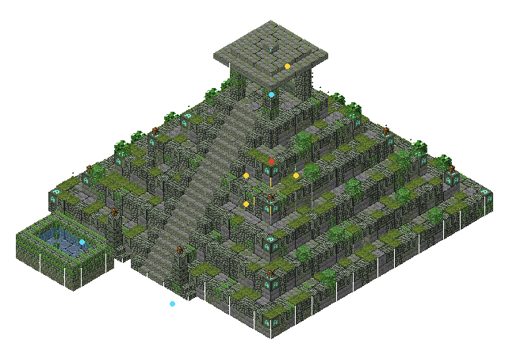
Pyramide à degrés
junglessanctuaire au sommet ; deux pierres sculptées à l'est cachent la chambre au trésor

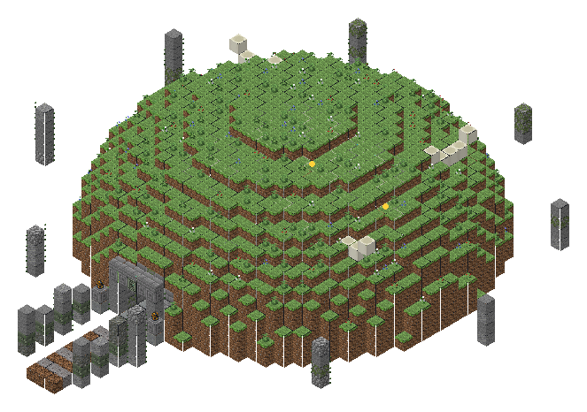
Tertre du Colosse
Plaine des Colossessalle côtelée d'os géants, crâne aux yeux de flamme, l'autel du Colosse

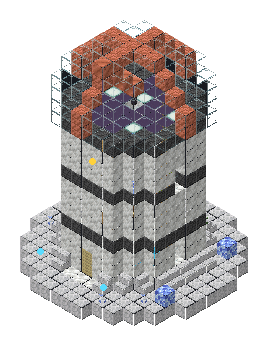
Observatoire des Cimes
picscoupole de verre, télescope, carte du ciel au sol, golems endormis

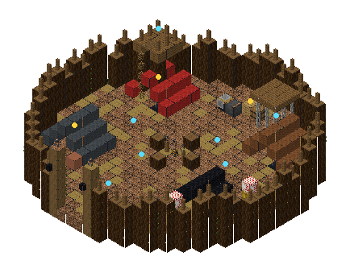
Camp de brigands
plaines, savanes, taïgas, canyonspalissade, tentes, tour de guet, un captif en cage

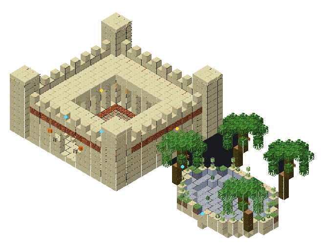
Caravansérail
désert, canyonscour à arcades, fontaine, chameaux, marchand ; palmiers et mare

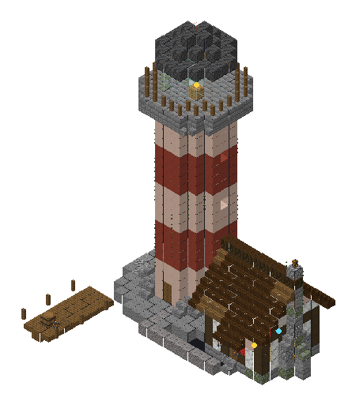
Phare
plages, côtestour rouge et blanche, lanterne, maison du gardien

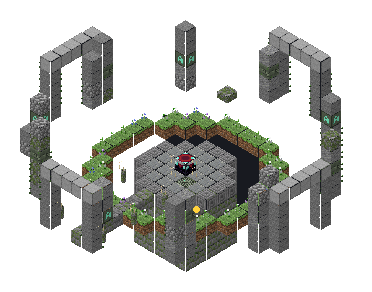
Sanctuaire des menhirs
plaines, taïgascercle de pierres, runes lumineuses ; sous l'autel, la pierre fêlée

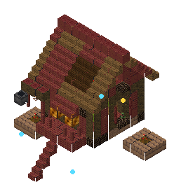
Hutte de l'herboriste
marais, Sylvesur pilotis, alambic, jardin de champignons

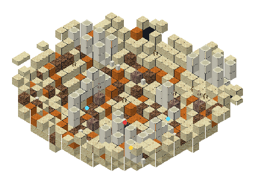
Nid de scorpions
déserts, badlandscratère d'os et de dards ; le trésor est enterré près du nid

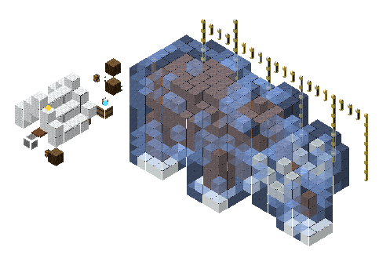
Mammouth gelé
neiges, Taïgaun mammouth entier pris dans la glace, le camp des fouilleurs
Au bord des chemins
Entre les sites, de petites choses à trouver, dans toutes les terres de l'Overworld :
| Découverte | Où, combien | Ce qu'on y trouve |
|---|---|---|
| Autel des vœux | partout, ~2 par km² | un petit sanctuaire couvert. Posez une émeraude sur l'autel : une bénédiction de 5 minutes (vitesse, célérité, force, résistance, régénération, saut, vision nocturne, respiration, résistance au feu, chance, chute lente, absorption, grâce du dauphin, héros du village, vie supplémentaire), parfois quelques fragments (22 %) ou un diamant (3 %). Un vœu par jour et par voyageur, tous autels confondus. |
| Cairn du voyageur | partout, ~4 par km² | un tas de pierres et sa lanterne : creusez deux blocs sous le cairn, une cache attend (vivres, émeraudes, carte, parfois une boussole) |
| Tombe d'aventurier | partout, ~1,5 par km² | un tertre, une stèle moussue, un crâne : son équipement est enterré deux blocs sous le tertre (souvent une page de la Chronique) |
| Cercle de fées | forêts | un anneau de champignons autour d'une azalée en fleur |
| Tronc géant couché | forêts, taïgas, jungles | un fût creux de 9 à 15 blocs ; une fois sur quatre, une cache à l'intérieur |
| Source chaude | neiges, taïgas froides, cimes | une mare tiède cerclée de calcite, éclairée par des cornichons de mer, qui ne gèle jamais |
Le Colosse éveillé
Posez un sceau (ou 16 fragments) sur l'autel du Tertre : le géant se lève. Trois temps : coups et piétinements qui projettent, puis rochers arrachés et lancés, puis, sous le tiers de sa vie, il accélère et appelle les spectres du tertre. Il laisse des fragments, des diamants, des blocs d'or et une étoile du Nether.
| Commande | Effet |
|---|---|
| /contrees atlas | contrées, lieux, merveilles, épreuves et pages de la Chronique découverts |
| /contrees chronicle | ouvre le livre de la Chronique |
| /contrees quests | vos quêtes et leur avancée |
| /contrees abandon <n> | abandonner une quête |